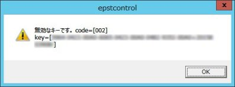
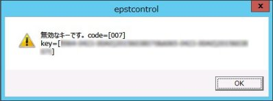

[対象製品]1.キー内容の入力間違いをしている可能性。
・E-Post Mail Server Enterprise II
・E-Post SMTP Server Enterprise II
・E-Post Mail Server Enterprise II (x64)
・E-Post SMTP Server Enterprise II (x64)
再度キーをメモ帳などに正しく入力し、その内容をコピーし、入力ボックス内に貼り付けて登録を行ってください。2.OSのシステム日付等が意図的に狂わされている場合。
Enterprise II / Enterprise II (x64)では、製品到着後１ヶ月以内にライセンスキーを入力する必要がありますので、ご注意ください。Enterprise II / Enterprise II (x64)でライセンスキーを入力し忘れてしまい、製品到着後１ヶ月を超えて入力しようとするときは、マシン日付を一時的に有効な日付に戻していただいてから、ライセンスキーを登録する方法で対処していただくことになります。
有効な日付が不明な場合は、サポートまでお問い合わせください。
製品到着年月以外に意図的に狂わせた年月に設定して入力すると「キーが無効です」と表示されます。3.弊社が規定した回数以上のライセンスキーの登録を複数のマシンに行っている場合。
規定した回数以上のライセンスキーの登録を行おうとすると、弊社認証サーバで上限が設けられており、エラーとなります。4.「Error: A connection with the server・・・・」というメッセージが表示され、「キーは無効です」と表示される場合。
サーバリプレース作業などに伴い、ライセンスキー再登録の必要が発生した場合は、弊社認証サーバで認証済みライセンスキーの初期化（リセット）作業を行う必要があります。
その場合は、「サポート２」のダウンロード−カテゴリ：「申し込み書・申告書」より、"ライセンスキー再入力設定申込書.pdf"書類をダウンロードいただき、印刷の上、ご記入いただいてからFAXでご送信ください。
なお、弊社側での作業にあたっては、インシデント１つ分を消化対象とさせていただきます。
ライセンス登録が正常に行われるには、インターネット接続環境が必要です。登録時の認証は、HTTPプロトコル（80番ポート）を使って、メールサーバ製品をインストールしたマシンと弊社認証サーバとの間でやりとりが行われます。そのため、同ポートを使って通信ができる環境が必要になります。5. 32bit版 E-Postシリーズ用ライセンスキーを64bit版 E-Post(x64) シリーズで登録しようとした場合。
通信時には、Windowsの「インターネットオプション」の設定を参照します。プロキシサーバ経由でインターネット接続しているときは、Windowsの「インターネットオプション」の設定の中にプロキシの設定が正しくされているか確認してください。メールサーバマシンのブラウザから、弊社Webページが閲覧できれば特に問題はありません。
プロキシ経由でインターネット接続環境が構築されているとき、通信がプロキシで遮断されていると、認証ができないため、結果的にこの「キーが無効です」メッセージが表示されることがあります。プロキシの設定を見直して通信ができる環境になっているか改めて確認してください。
32bit版 E-Post Enterprise II シリーズのライセンスキーを64bit版 E-Post Enterprise II (x64) シリーズに登録しようとすると、次の画面のような「無効なキーです。code=[002]」などと表示され、エラーとなります。32bit版E-Postシリーズのライセンスキーは、32bit版E-Postシリーズにしか登録できません。また逆に64bit版E-Postシリーズのライセンスキーは、64bit版E-Post(x64) シリーズにしか登録できません。

[対象製品]1.キー内容の入力間違いをしている可能性。
・E-Post Mail Server Standard
・E-Post SMTP Server Stardard
・E-Post BossCheck Server
・E-Post Mail Server Standard (x64)
・E-Post SMTP Server Stardard (x64)
・E-Post BossCheck Server (x64)
再度キーをメモ帳などに正しく入力し、その内容をコピーし、入力ボックス内にペーストして登録を行ってください。Standard版製品についても、できる限り、製品到着後１ヶ月以内にライセンスキーを入力していただくことが望ましいです。ただし、１ヶ月を超えて入力しても機能上の問題はありません。キー入力が無効になることはありません。2.弊社が規定した回数以上のライセンスキーの登録を複数のマシンに行っている場合。
規定した回数以上のライセンスキーの登録を行おうとすると、弊社認証サーバで上限が設けられており、エラーとなります。3.「Error: A connection with the server・・・・」というメッセージが表示され、「キーは無効です」と表示される場合。
サーバリプレース作業などに伴い、ライセンスキー再登録の必要が発生した場合は、弊社認証サーバで認証済みライセンスキーの初期化（リセット）作業を行う必要があります。
その場合は、「サポート２」のダウンロード−カテゴリ：「申し込み書・申告書」より、"ライセンスキー再入力設定申込書.pdf"書類をダウンロードいただき、印刷の上、ご記入いただいてからFAXでご送信ください。
なお、弊社側での作業にあたっては、インシデント１つ分を消化対象とさせていただきます。
ライセンス登録が正常に行われるには、インターネット接続環境が必要です。登録時の認証は、HTTPプロトコル（80番ポート）を使って、メールサーバ製品をインストールしたマシンと弊社認証サーバとの間でやりとりが行われます。そのため、同ポートを使って通信ができる環境が必要になります。インターネット上のWebページが閲覧できれば特に問題はありません。4. 32bit版 E-Postシリーズ用ライセンスキーを64bit版 E-Post(x64) シリーズで登録しようとした場合。
プロキシ経由でインターネット接続環境が構築されているとき、プロキシで遮断されていると、認証ができないため、結果的にこの「キーが無効です」メッセージが表示されることがあります。プロキシの設定を見直して通信ができる環境になっているか改めて確認してから、ライセンス登録を行ってください。
また、LAN内やWAN内に限定したイントラネット専用のメールサーバを構築するなど、外部との通信を想定していない環境でのご使用のときは、ライセンス登録時の認証が行われるときのみ、外部との通信ができる環境に一時的に変更していただくようお願いしています。
購入前に、外部との通信ができる環境に一切置かないことが判明しているときは、事前に弊社までご相談ください。購入後にそうした事態が判明されても、後からの対応は非常に困難なことが想定されます。
32bit版 E-Post Standardシリーズのライセンスキーを64bit版 E-Post Standard (x64) シリーズに登録しようとすると、次の画面のような「無効なキーです。code=[007]」などと表示され、エラーとなります。32bit版E-Postシリーズのライセンスキーは、32bit版E-Postシリーズにしか登録できません。また逆に64bit版E-Postシリーズのライセンスキーは、64bit版E-Post(x64) シリーズにしか登録できません。
